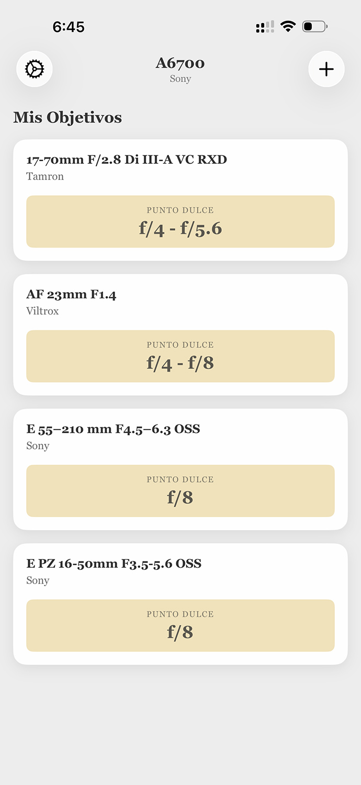

Diseño Minimalista
Sin distracciones. Un inventario sencillo focalizado puramente en tus cámaras y objetivos favoritos sin ruido visual.



Sin distracciones. Un inventario sencillo focalizado puramente en tus cámaras y objetivos favoritos sin ruido visual.
Aplicación creada por un fotógrafo para solucionar nuestras necesidades reales. Ten los puntos dulces de tus objetivos siempre a mano cuando los necesites.
Tus datos te pertenecen. Nada se comparte, ni se recopila, y no hay analíticas. Todo funciona estrictamente de forma local en tu dispositivo.